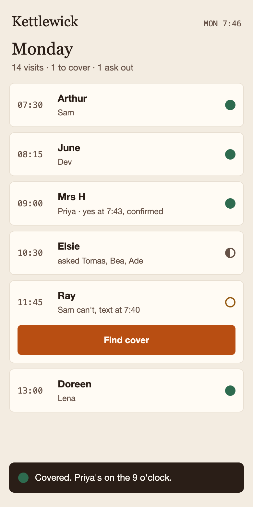

When a carer calls in sick, Kettlewick finds the cover in one tap.
It texts the three carers most likely to say yes. The first yes takes the visit, and you see it covered. Your schedule stays in your spreadsheet.
Find your next cover with Kettlewick
Instead of the phone tree
The phone tree costs you an hour of calls on a Monday, and it costs the carers their evening. Kettlewick does those calls as three texts.
- A carer texts in sick. You tap the visit.
- Kettlewick drafts the ask; you can change it before it goes.
- The three carers most likely to be free get it. The first yes takes the visit.
It never ranks your carers, never tracks where they are, and never texts anyone after 8pm.
“it just texts the right three”
£4 a carer a month, paid by the agency. Free for carers.
Find your next cover with KettlewickPrivacy · What we keep, and who processes it · Kettlewick is fictional — the worked example in BOSS's demo.